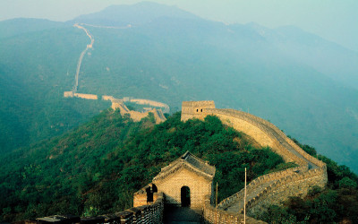
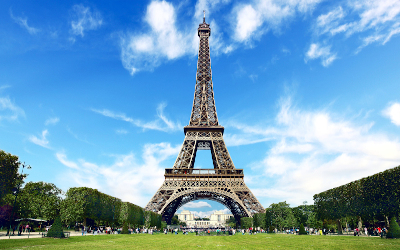
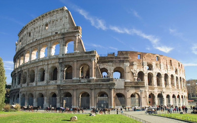
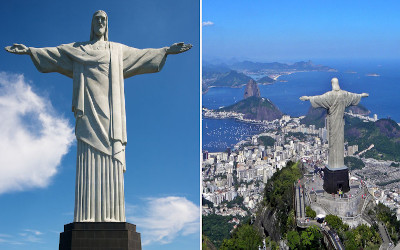

Great wall of chinaThe Great Wall of China is the collective name of a series of fortification systems generally built across the historical northern borders of China to protect and consolidate territories of Chinese states and empires against various nomadic groups of the steppe and their polities. |

Eiffel TowerThe Eiffel Tower, La Tour Eiffel in French, was the main exhibit of the Paris Exposition or World's Fair of 1889. It was constructed to commemorate the centennial of the French Revolution and to demonstrate France's industrial prowess to the world. |

ColosseumThe Colosseum or Coliseum, also known as the Flavian Amphitheatre, is an oval amphitheatre in the centre of the city of Rome, Italy. Built of travertine limestone, tuff, and brick-faced concrete, it was the largest amphitheatre ever built at the time and held 50,000 spectators. | 
Christ the RedeemerChrist the Redeemer is a monumental statue located in Rio de Janeiro, Brazil. It is the symbol of the city and, beyond that, of the whole Brazil. It is also a symbol of Christianity among the most important of the World. Christ the Redeemer is also an important tourist destination, with 600,000 visitors a year. |